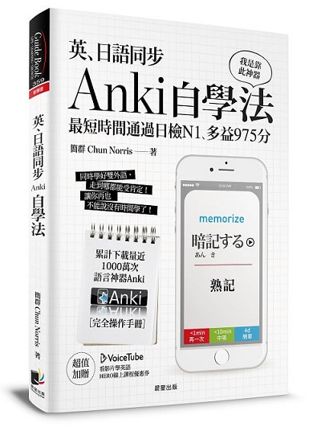

「Chrome Extension 下載網路字典發音」已經成功更新完畢
您好，我是此 Chrome 插件的製作者 Chun Norris，很高興此插件能幫助到您。
我寫的書《英、日語同步Anki自學法》已於 2017/1/15 正式出版，希望您可以給予支持。

《英、日語同步Anki自學法》
- 以加強英語/日語為目標，建立正確的學習態度。
- 完整的 Anki 軟體使用教學，初心者也能快速上手。
- 利用自製工具來做好時間管理，讓學習更有效率。
- 以各種實用的心理學原理為例，利用心理學技巧控制自己。
- 除了書中內容外，另外免費附贈《脫魯祕笈》網站，用超過 10 萬字來教你如何變強！
- 隨書免費附贈全台最大英語學習平台 VoiceTube 的 HERO 課程折價券。
- 更多資訊請參考 詳細介紹。
除此之外，特製十萬字《脫魯祕笈》網站放置本書的後半段內容。
我寫這本書的目的是為了讓你能夠變強，而變強不是三言兩語就能完成的事情。因此我將基礎內容(約9萬多字)撰寫在書中，而進階內容(約10萬多字)則放置於《脫魯祕笈》網站，並隨書免費附贈給讀者。簡單來說，就是讓你以一本書的價格買到超過兩本書的內容。
《脫魯祕笈》網址：https://tolu.tw/

更新紀錄
- v 0.1.26 (2017/11/19)
- 新增 WordReference
- v 0.1.25 (2017/11/18)
- 新增 learngerman.dw.com；修正 Oxford Learners Dictionaries 錯誤
- v 0.1.24 (2017/7/06)
- 新增原住民族語言線上辭典
- v 0.1.23 (2017/6/18)
- 新增 漢典
- 新增 歐路辭典
- v 0.1.22 (2017/4/21)
- 新增 Naver Dictionary
- v 0.1.21 (2017/4/19)
- 新增 Collins Dictionary
- v 0.1.20 (2017/3/13)
- 新增 Dict.cn
- v 0.1.19 (2017/2/23)
- 再次修正 JapanesePod101 與 VietnamesePod101，有問題請回報
- v 0.1.18 (2017/2/20)
- 修正 JapanesePod101 與 VietnamesePod101 字典改版
- v 0.1.17 (2017/2/13)
- 新增 thai2english
- 新增 thai-language.com
- v 0.1.16 (2017/1/19)
- 修正 Yahoo 字典改版
- v 0.1.15 (2017/1/6)
- 在此頁面加入我寫的書《英、日語同步Anki自學法》的廣告資訊，如有打擾請見諒。
- v 0.1.14 (2016/12/17)
- 新增 Longman Dictionary of Contemporary English
- 新增 Linguee
- 新增 BeoLingus
- v 0.1.13 (2016/9/20)
- 新增 Merriam Webster medical dictionary
- v 0.1.12 (2016/9/18)
- 新增 有道詞典
- v 0.1.11 (2016/7/27)
- 新增 Online Japanese Accent Dictionary
- v 0.1.10 (2016/7/16)
- 新增 Dictionary.com
- Cambridge Dictionary 改 mp3 而非 ogg
- v 0.1.9 (2016/6/10)
- 新增 粵語發音詞典
- v 0.1.8 (2016/6/5)
- 新增 沪江小d
- 新增 tratu.coviet.vn
- v 0.1.7 (2016/6/1)
- 新增 Vietnamesepod101
- v 0.1.6 (2016/5/17)
- 新增 Macmillan Dictionary
- v 0.1.5 (2016/5/4)
- 修正此頁面編碼問題
- v 0.1.4 (2016/4/24)
- 新增 Quizlet
- v 0.1.3 (2016/4/22)
- 新增 The Free Dictionary
- v 0.1.2 (2016/4/22)
- 修正 japanesepod101 改版
- v 0.1.1 (2016/4/17)
- 新增 Vocabulary.com
- 修正「下載發音」之字體大小
- 新增 User Data Privacy
- v 0.1.0 (2016/3/12)
- 新增 Merriam Webster
- 新增 VoiceTube
- 新增 Dr.eye 譯典通
- v 0.0.9 (2015/12/13)
- 新增 learnersdictionary
- v 0.0.8 (2015/12/2)
- 新增法語助手
- v 0.0.7 (2015/11/11)
- 新增 japanesepod101
- v 0.0.6 (2015/11/10)
- 新增德語助手
- v 0.0.5 (2015/11/2)
- 新增劍橋字典
- v 0.0.4 (2015/10/30)
- 修正萌典客語錯誤
- v 0.0.3 (2015/10/29)
- 新增萌典